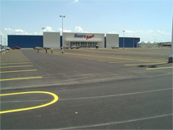
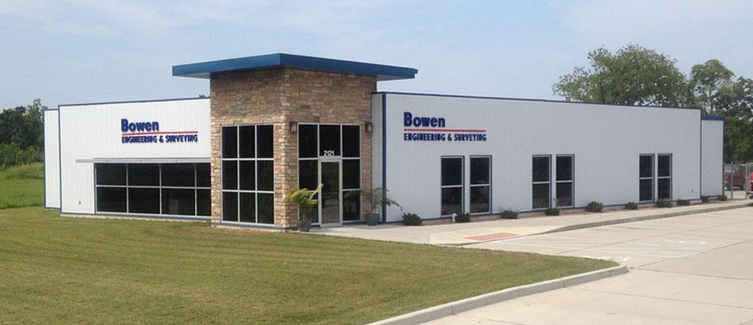
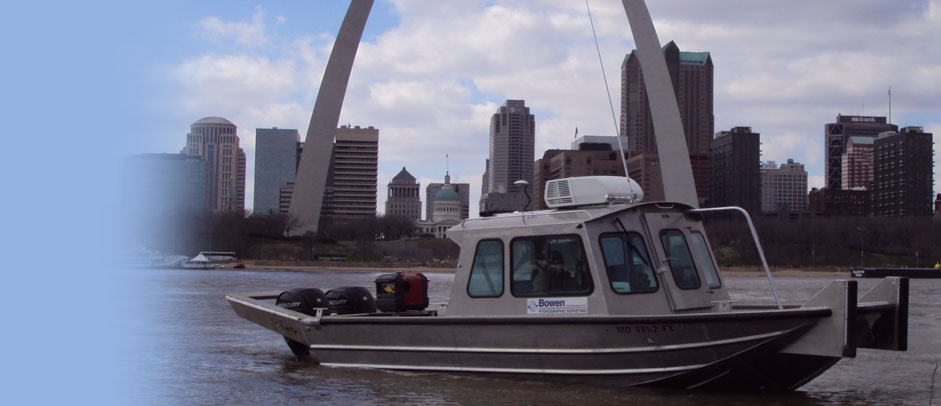
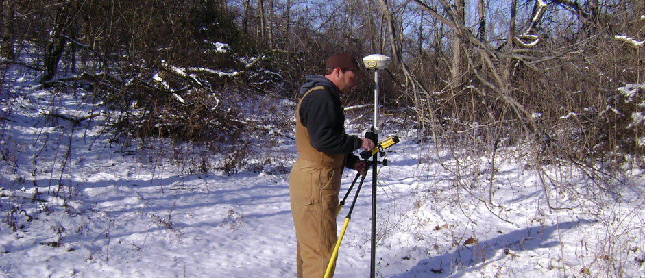
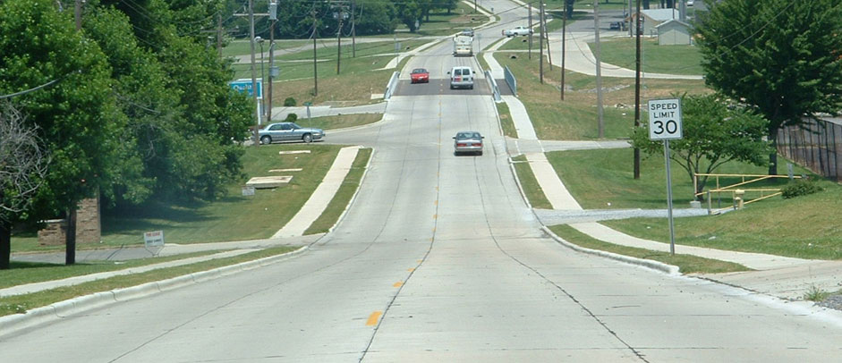
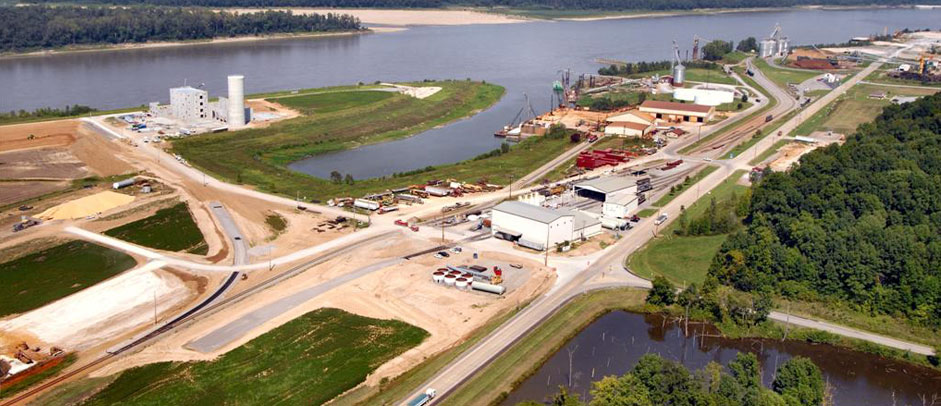
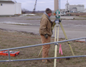
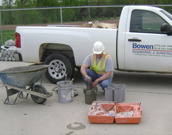
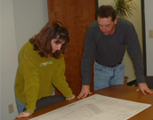

Engineering
Roadways, commercial sites, bridges, utilities, wastewater, water systems, and structural design.
View engineering services




Established 1979 · Cape Girardeau, Missouri
A full range of civil engineering, land surveying, testing, and project services delivered with local knowledge and practical experience.
Bowen Engineering & Surveying
Bowen Engineering & Surveying was founded in 1979 by the late Richard I. Bowen. For over 45 years, our firm has provided a full range of civil engineering and surveying services.
Our staff of professional engineers, surveyors and certified technicians provides our customers with over 100 years of experience. We take pride in our ability to complete projects ranging from small residential lot surveys to multi-million dollar infrastructure projects in a cost effective, timely and efficient manner, utilizing the latest technological advances in equipment and techniques.
Our capabilities
From early field work to design, inspection, and delivery, Bowen brings connected expertise to every phase.

Roadways, commercial sites, bridges, utilities, wastewater, water systems, and structural design.
View engineering services
Land, construction, hydrographic, GIS, utility mapping, control, and geodetic surveying.
View surveying services
Field and laboratory testing, classification, density testing, and construction inspection.
View testing servicesA representative portfolio spanning commercial, municipal, healthcare, transportation, and recreation work.
Explore projects
Meet the engineers, surveyors, project managers, and office professionals behind our work.
Meet our staffTalk with Bowen Engineering & Surveying in Cape Girardeau.